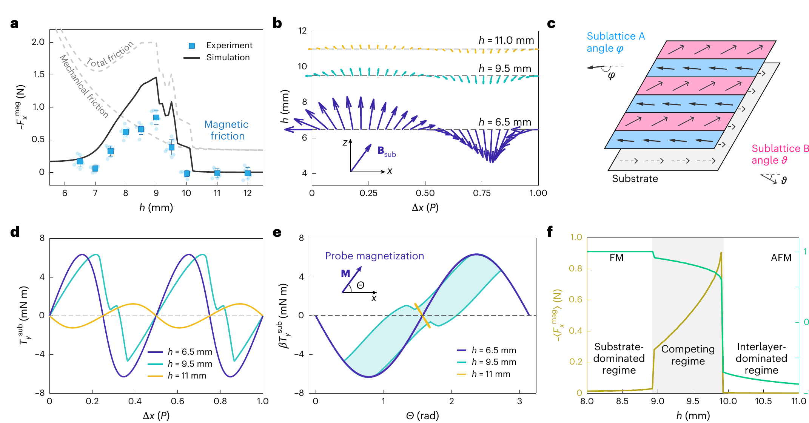

Question
Define what is genuinely unknown.
HOW WE WORK
Our projects do not follow one rigid sequence. These are the questions we return to until the claim, the evidence and the limits agree.
Define what is genuinely unknown.
Keep the physics and constraints that matter.
Create an experiment that can change the explanation.
Explain observations and make a prediction.
Choose a fair reference and operating range.
State what transfers, and where it stops.


Separate what the literature has demonstrated from what it assumes. Decide what a result would actually teach us before building the system.
A useful experiment reduces uncertainty: it discriminates between mechanisms, tests a prediction, reveals a limit or explains a failure.
Prefer a model whose physical meaning is clear, whose assumptions can be tested and whose prediction can guide the next measurement.
A benchmark needs a reference, a metric and comparable conditions. An advantage should survive over a stated operating range.
A mechanism, a model, a design principle and an application are different contributions. Each requires evidence at the level claimed.
Researchers progressively take ownership of the literature, the question, the experiment, the interpretation and the next decision.
A research project is complete enough to communicate when its claims are supported at the level at which they are made.
RESEARCH AS TRAINING
Guidance is strongest at the beginning. Over time, each researcher is expected to decide what is unknown, what experiment is informative, how to interpret failure and what evidence closes the argument.